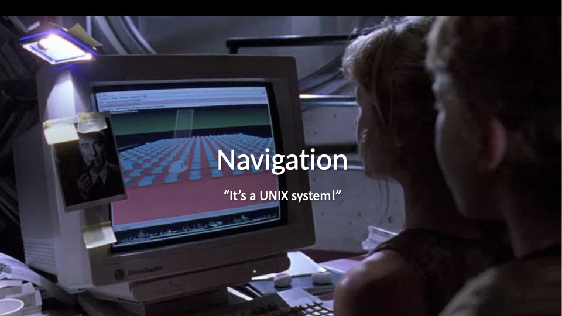

Week 2 Computational Tools for Bioengineers
Bill Cresko
Goals for today
- Deeper dive into Unix tools
- Reading and writing files
- Tidy data
- Advanced Unix tools to manipulate large files
Computational Tools - The Command Line

What is Unix?
- A scripting language developed in 1969, released in 1973
- Serves as the base language for many programs and computers
- Runs both locally on your computer and on large clusters like Talapas
- Linux is an open-source version of the same language
What is a shell?
The ‘shell’ is a program that runs UNIX and takes in commands and gives them to the operating system
Bashacts as the shell in macs, linux, and now windowsYou can access the shell via a
terminal window

Recipes for a shell command
- Prompt: notation used to indicate your computer is ready to accept a new command
- Command: the building blocks of programming, tell computer to do a specific task
- Options: change the behavior of a command
- Argument: what the command should operate on
Why use the shell?
- Speed
- Can handle extremely large file sizes
- Use programs only available via shell
- The commands work almost identically across platforms
- You can even use them on a large computer cluster like Talapas and AWS
- It is incredibly powerful particularly for repeated actions
- It allows you to do thousands of ‘clicks’ with single commands
Where do you get help?
- Manual pages!
- The shell has manuals for all basic commands
- Type
man [command_name]to access the manual for a specific command - Type
qto exit
- Also…the internet!
- Also… Generative AI (ChaptGPT, Claude, etc..)
Common navigation commands

The way you normally navigate


How is a computer organized?
- System of directories (folders) and files
- / = the root directory, which holds all other directories
- Most of your files will be located under /Users in a directory of your username
- the
~is shorthand for your home folder - Navigation in the shell consists of jumping up and down between directories and seeing what’s in them
- The “path” refers to the location a file is in
- ex: “/Users/wcresko/Documents”


Common navigation commands
pwd= “print working directory”, which will print where you currently are in the systemls= “list”, list all directories and files in your current positionls –F= denote which results are directories, files, etc.ls –l= ”long format”, lists total file sizesls –r= “reverse”, lists the results in reverse orderls –S= “size”, sort results by sizels –t= “time”, sort results by time created, from most recent to last
Common Navigation Commands
cd= “change directory”, will place you in a new position based on your path argumentcd ..“go up one directory”cd –“go to the directory you were at last (like the back arrow on an internet browser)”cd ~“go to my home directory”
Let’s practice!
- Try navigating around your computer using
cdandls - If you are on Ubuntu, you may need to create some empty directories in your Ubuntu folder before navigating in the terminal
Working with files
Making new files
- Make new folders:
mkdir - Make new files:
nano,touch - Rename files:
mv - Move files:
mv - Copy files:
cp - Delete files:
rm - Delete directories:
rmdir - Examining file length:
wc - Reading files:
cat - Looking at beginning or end:
headortail
Things to keep in mind
- The shell trusts you
- It will delete files you say to delete
- It will override files if you name 2 things the same
- Naming conventions
- Avoid spaces
- Don’t start with a –
- Stick to letters, numbers, . , -, and _
- Use appropriate file extensions in file names
- Some software expect files with certain extensions (.fasta, .txt, etc.)
Let’s try it out
- Make a new directory called whatever you’d like.
- Add a file named “Practice.txt” to the directory and add some text to it
- Read the contents of the file and get its length
- Rename the file to “Super_practice.txt”
- Move the file to a new folder named “Testing”
- Make a copy of the file named “Super_practice_copy.txt”
- Read the contents of the file and get its length to make sure it’s the same as Super_practice.txt
- Delete the original “Super_practice.txt”
Reading Files in Unix
Commands for Reading Files
cat= concatenate and display files- Shows entire file at once
- Good for small files
less= view file page by page- Navigate with space (forward), b (back), q (quit)
- Search with /pattern
more= similar to less but simpler- Space to go forward, q to quit
head= display first 10 lines (default)head -n 20 file.txtshows first 20 lines
tail= display last 10 lines (default)tail -n 20 file.txtshows last 20 linestail -f file.txtfollows file as it grows (useful for logs)
Input Redirection
<= redirect input from a filecommand < input.txt- Sends contents of file as input to command
<<= here document (multi-line input)- Allows you to provide multi-line input directly in the terminal
- Example uses:
wc -l < data.txtcounts lines in data.txtsort < names.txtsorts contents of names.txt- Many commands can read from files directly OR from
stdin
Writing Files in Unix
Output Redirection
>= redirect output to a file (overwrites)ls -l > filelist.txt- Creates new file or overwrites existing
>>= append output to a fileecho "new line" >> existing.txt- Adds to the end of existing file
2>= redirect error messagescommand 2> errors.txt- Captures error messages separately
&>= redirect both output and errorscommand &> all_output.txt
Unix Pipes
What are Pipes?
|= the pipe operator- Takes output from one command as input to another
- Chains commands together
- No intermediate files needed!
- Basic syntax:
command1 | command2 | command3
- Power of Unix philosophy:
- Small tools that do one thing well
- Combine them to do complex tasks
Common Pipe Patterns
- Counting patterns:
grep "pattern" file.txt | wc -l- Count lines matching a pattern
- Sorting and uniqueness:
cat file.txt | sort | uniq- Sort lines and remove duplicates
- Finding top/bottom items:
sort data.txt | head -5- Get top 5 after sorting
- Filtering and processing:
ls -l | grep ".txt" | awk '{print $5, $9}'- List txt files with sizes
Advanced Pipe Examples
- Multi-step data processing:
cat data.csv | cut -d',' -f2 | sort | uniq -c | sort -rn- Extract column 2, count unique values, sort by frequency
- Real-time monitoring:
tail -f logfile.txt | grep ERROR- Watch log file for errors in real-time
- Complex transformations:
find . -name "*.txt" | xargs wc -l | sort -n- Find all txt files and sort by line count
Combining It All Together
Example workflow:
Practice Exercise: Files and Pipes
Try these exercises:
- Create a file with a list of numbers (one per line)
- Use pipes to sort them numerically
- Save the sorted list to a new file using redirection
- Use
teeto display and save the top 5 numbers - Count how many unique numbers you have using pipes
- Append the count to your results file
Tips for Working with Files and Pipes
- Test pipes step by step
- Build complex pipes incrementally
- Check output at each stage
- Use
lessfor large files instead ofcat - Remember:
>overwrites,>>appends - Pipe efficiency:
- Filter early in the pipeline
- Reduces data passed between commands
- Save intermediate results when debugging complex pipes
Break
Tidy Data
An example to get us started


Data set rules of thumb (aka Tidy Data)
- Store a copy of data in nonproprietary software and hardware formats, such as plain ASCII text (aka a flat file)
- Leave an uncorrected file when doing analyses
- Use descriptive names for your data files and variables
- Include a header line with descriptive variable names
- Maintain effective metadata about the data (data dictionary)
- When you add observations to a database, add rows
- When you add variables to a database, add columns, not rows
- A column of data should contain only one data type
Not all data are tidy to begin with
Sometimes need to do some data wrangling
But also contingency tables
Types of data
| Categorical | Quantitative | ||
| Ordinal | Nominal | Ratio | Interval |
| small, medium, large | apples, oranges, bananas | kilograms, dollars, years | temperature, calendar year |
| ordered character | character | numeric | integer |
‘Factor’ is a special type of character variable that we will explore more later
BioE_Comp_Tools_2025 - Knight Campus